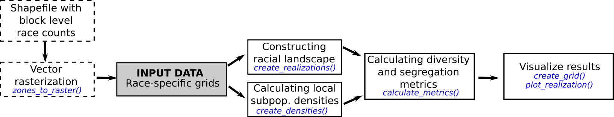

raceland: R package for a pattern-based, zoneless method for analysis and visualization of racial topography
Anna Dmowska, Tomasz Stepinski, Jakub Nowosad
2019-08-24
raceland-intro.RmdINTRODUCTION
The raceland package implements a computational framework for a pattern-based, zoneless analysis and visualization of (ethno)racial topography. It is a reimagined approach for analyzing residential segregation and racial diversity based on the concept of ‘landscape’ used in the domain of landscape ecology.
The proposed approach adopts a bird’s view perspective - in which visualization and quantification of racial topography (an overall organization of a spatial pattern formed by locations of people of different races) are tightly intertwined by using the same data - a high-resolution raster grid with each cell containing only inhabitants of a single race. Such grids represent a racial landscape (RL). A racial landscape (RL) consists of the mosaic of many large and small patches (racial enclaves) formed by adjacent raster grid cells having the same race categories. The distribution of racial enclaves creates a specific spatial pattern.
The racial landscape is described by exposure matrix and quantified by two metrics (entropy and mutual information) derived from Information Theory concept (IT). Entropy is the measure of racial diversity and mutual information measures racial segregation.
Racial landscape method is based on the raster gridded data, and unlike the previous methods, does not depend on the division for specific zones (census tract, census block, etc.). Calculation of racial diversity (entropy) and racial segregation (mutual information) can be performed for the whole area of interests (i.e., metropolitan area) without introducing any arbitrary divisions. Racial landscape method also allows for performing the calculation at different spatial scales.
A COMPUTATIONAL FRAMEWORK
A computational framework implemented in the raceland package allows for:
Constructing racial landscape based on race-specific raster grids.
Describing the racial pattern of a racial landscape at different scales or/and for the whole area of interests using metrics derived from Information Theory concept (entropy and mutual information).
Mapping the racial landscape.
Mapping racial diversity and segregation at different scales.
A computational framework consists of the four steps (see figure below, the blue font indicates the names of function from the raceland package).

Input data
Racial landscape method is based on high-resolution race-specific raster grids. Each cell in race-specific grids contains race subpopulation density. SocScape project provides high-resolution raster grids for 1990, 2000, 2010 years for 365 metropolitan areas and each county in the conterminous US. Data is available at http://sil.uc.edu/cms/index.php?id=socscape-data.
The calculation can also be performed using a spatial vector file (e.g., shapefile) with attribute table containing race counts for aggregated data. In such case, a spatial vector object is first rasterized using the zones_to_rasters() function from the raceland package (people of a given race are redistributed to the cells by dividing the number of people by the number of cells belonging to the particular spatial units).
Please notice that the rasterization time depends on the number of divisions and for large areas (i.e., metropolitan areas) can be time-consuming. It is recommended to use the smallest available divisions.
Here we demonstrate a computational framework using an example of the area of 60x60 cells. The input data is a high-resolution (30m) raster grids. Race-specific rasters are stored as GeoTIFFs (the directory contains five files for five race-groups: Asians, Blacks, Hispanic, others and Whites).
The RasterStack with race-specific grids is created based on the GeoTIFF files (files will be sorted and read into RasterStack in alphabetical order; the categories in the racial landscape will depend on the order of layers in input data - see details in the next section).
Working with high resolution grids
race_raster = stack(list_raster)
race_raster
#> class : RasterStack
#> dimensions : 60, 60, 3600, 5 (nrow, ncol, ncell, nlayers)
#> resolution : 30, 30 (x, y)
#> extent : 685545, 687345, 2103255, 2105055 (xmin, xmax, ymin, ymax)
#> crs : +proj=aea +lat_1=29.5 +lat_2=45.5 +lat_0=23 +lon_0=-96 +x_0=0 +y_0=0 +ellps=GRS80 +towgs84=0,0,0,0,0,0,0 +units=m +no_defs
#> names : asian, black, hispanic, other, white
#> min values : 0, 0, 0, 0, 0
#> max values : 1.3333334, 15.3125000, 9.6666670, 0.5714286, 3.7500000
Working with vector data
While using spatial vector data, the file should be read to R using the st_read() function from the sf package. In the next step spatial object is rasterized using zones_to_rasters() from the raceland package.
Function zones_to_rasters() requires three arguments:
-
v- an sf object with aggregated attribute data -
resolution- a resolution of the output raster (below we useresolution=30, which is the same resolution as used in the SocScape grids) -
variables- a character vector with columns names from v. The values from these columns will be (1) rasterized and (2) recalculated to densities. Each column will be represented as a layer in the output RasterStack.
vect_data = st_read(pf_to_data)
#> Reading layer `block_data' from data source `/home/travis/R/Library/raceland/vect_data/block_data.gpkg' using driver `GPKG'
#> Simple feature collection with 264 features and 6 fields
#> geometry type: POLYGON
#> dimension: XY
#> bbox: xmin: 685545 ymin: 496468.7 xmax: 687345 ymax: 498268.7
#> epsg (SRID): NA
#> proj4string: +proj=aea +lat_1=29.5 +lat_2=45.5 +lat_0=37.5 +lon_0=-96 +x_0=0 +y_0=0 +ellps=GRS80 +units=m +no_defsrace_raster_from_vect = zones_to_raster(v = vect_data,
resolution = 30,
variables = c("ASIAN", "BLACK", "HISPANIC", "OTHER", "WHITE"))Once vector data is rasterized, there is no difference, whether race_raster object or race_raster_from_vect will be used for further analysis.
Constructing racial landscape
The racial landscape is a high-resolution grid in which each cell contains only inhabitants of a single race.
The racial landscape is constructed based on race-specific grids. Racial composition at each cell is translated to probabilities of drawing a person of a specific race from a cell. Thus, the race label of a cell is a random variable. To obtain a stochastic realization of racial landscape, we use the cell’s race probabilities and a random number generator to randomly assign specific race label to each cell (Monte Carlo procedure).
Multiple draws yield to a series of realization with a slightly different pattern (see example below). The pattern uncertainty occurs only at sub-block scale and only if there is significant sub-block racial diversity.
A single realization-based visualization is sufficiently accurate. For increased accuracy, racial topography is quantified as an ensemble average from multiple realizations. It is recommended to calculate at least 30 realizations.
Realization is constructed using the create_realizations() function with two arguments:
-
x- RasterStack with race-specific population densities assign to each cell -
n- A number of realizations to generate
Function returns RasterStack object containing n realizations. Single race label in a racial landscape is assigned based on the order of race-specific grids stored in RasterStack. For example, race_raster object has five layers named: asian, black, hispanic, other, white. The race labels in racial landscape raster will be 1 - asian, 2- black, 3 - hispanic, 4 - other, 5 - white.
# generate 100 realizations based on race_raster object
real_raster = create_realizations(x = race_raster, n = 100)# plot five first realizations
plot(real_raster[[1:5]], col = c("#F16667", "#6EBE44", "#7E69AF", "#C77213", "#F8DF1D"))
The racial landscape provides a skewed visualization of the racial pattern because it does not take into consideration the spatial variability of the population densities. To obtain an accurate depiction of racial distribution, the values of RL must be modified to reflect race and subpopulation densities.
Function plot_realization() display realization taking into account also subpopulation density. The function takes three arguments:
-
x- A raster object (RasterLayer, RasterStack, RasterBrick) with one selected realization representing a racial landscape -
y- RasterStack with race-specific population densities -
hex- A character vector with colors specified in hexadecimal format. Colors should correspond to categories in realization (racial landscape)
# In race_colors first color corresponds to asian, second to black,
# third to hispanics, fourth to other and fifth to white)
race_colors = c("#F16667", "#6EBE44", "#7E69AF", "#C77213", "#F8DF1D")
plot_realization(x = real_raster[[1]], y = race_raster, hex = race_colors)
Describing racial patterns of racial landscape
The exposure matrix describes a racial pattern. In the domain of landscape ecology, landscape pattern can be described by a co-occurrence matrix. The co-occurrence matrix is a tabulation of cells’ adjacencies. Adjacencies between pairs of cells are defined by 4-connectivity rule (There are max. 4 adjacencies: north, east, south, and west cell as is shown in the figure below).

The co-occurrence matrix has the size K x K (K - number of categories), is symmetrical and can be calculated for any region regardless of its size or shape.
Exposure matrix is a modification of co-occurrence matrix. The exposure matrix is calculated in the same way as the co-occurrence matrix, but each adjacency contributes as a location-specific value to the matrix instead of the constant value 1. The contributed value is calculated as the average of local population densities in the two adjacent cells.
Let consider an example of the racial landscape presented below. The co-occurrence matrix is constructed using only adjacencies from the racial landscape. To obtain an exposure matrix, each cell in the racial landscape has assigned two types of information: single race class and local population density. Considering two green adjacent cells - this pair will contribute 1 to the co-occurrence matrix (one adjacent pair) and the average from 2 and 1 ((2+1)/2)=1.5) to the exposure matrix.

Calculating local subpopulation densities
Local densities of subpopulations (race-specific local densities) along with racial landscapes are used to construct the exposure matrix. Local densities are calculated using the create_densities() function, which requires three arguments:
-
x- RasterStack with realizations -
y- RasterStack with shares of subpopulations (input data RasterStack) -
window_size- the size, expressed in the number of cells, of a square-shaped window for which local densities will be calculated; it is recommended to use the small window_size, i.e., 10 (window_size=10means that the local densities will be calculated from the area of 10 x 10 cells).
The output is a RasterStack with local densities calculated separately for each realization.
Exposure matrix
Here we show an example, how the exposure matrix is calculated. Please notice, that the calculation of the exposure matrix is build-in into the calculate_metrics() function and there is no need to calculate exposure matrix separately.
Exposure matrix can be calculated separately using the get_wecoma() function from the comat package. Calculation of exposure matrix requires two arguments:
-
x- RasterLayer with one selected realization -
y- RasterLayer with local densities corresponding to selected realizations.
As default, the exposure matrix with 4-directions adjacencies (neighboorhood = 4) is calculated using the average values from 2 adjacent cells (fun = "mean").
exposure_mat = comat::get_wecoma(x = real_raster[[1]], w = dens_raster[[1]])
colnames(exposure_mat) = c("ASIAN", "BLACK", "HISPANIC", "OTHER", "WHITE")
rownames(exposure_mat) = c("ASIAN", "BLACK", "HISPANIC", "OTHER", "WHITE")
round(exposure_mat, 2)
#> ASIAN BLACK HISPANIC OTHER WHITE
#> ASIAN 0.00 79.59 77.25 1.77 36.84
#> BLACK 79.59 7247.51 3281.76 99.81 1784.33
#> HISPANIC 77.25 3281.76 9297.82 91.12 3953.31
#> OTHER 1.77 99.81 91.12 27.03 123.21
#> WHITE 36.84 1784.33 3953.31 123.21 3067.33Information theory metrics (IT metrics)
To lucid quantification of racial topography, further compression of the exposure matrix is required. A racial pattern can be described (in the same way as landscape pattern in the domain of landscape ecology) by using Information Theory metrics - entropy and mutual information. Entropy is associated with measuring racial diversity, and mutual information is associated with measuring racial segregation.
Information theory metrics are calculated using function calculate_metrics(). This function calculates the exposure matrix and summarizes it by calculating four IT-derived matrics: entropy (ent), joint entropy (joinent), conditional entropy (condent) and mutual information (mutinf). The function requires the following arguments:
-
x- RasterStack with realizations -
w- RasterStack with local densities -
neighboorhood- adjacencies between cells can be defined in 4 directions (neighboorhood = 4) or 8 directions (neighboorhood = 8). -
fun- function to calculate values from adjacent cells to contribute to the exposure matrix,fun = 'mean'calculate average values of population density from two adjacent cells. Other available options are geometric mean ('geometry_mean') or value from a focal cell ('focal’) -
size = NULL- calculation will be performed for the whole area (see explanation later) -
threshold- the share of NA cells to allow metrics calculation.threshold = 1- calculation will be performed, even if there are 100% cells with NA values (recommended withsize = NULL)
metr_df = calculate_metrics(x = real_raster, w = dens_raster,
neighbourhood = 4, fun = "mean",
size = NULL, threshold = 1)head(metr_df)
#> realization row col ent joinent condent mutinf
#> 1 1 1 1 1.637535 3.160893 1.523358 0.1141773
#> 2 2 1 1 1.632548 3.152273 1.519725 0.1128234
#> 3 3 1 1 1.628219 3.144617 1.516398 0.1118212
#> 4 4 1 1 1.640177 3.161263 1.521086 0.1190901
#> 5 5 1 1 1.614946 3.116732 1.501786 0.1131598
#> 6 6 1 1 1.617879 3.128985 1.511106 0.1067726IT metrics are calculated for each realization separately, and in the next step, an average value from all realization is calculated.
Describing local racial patterns of racial landscape (calculation at different spatial scales)
Unlike the previous methods, the racial landscape method does not depend on the division into specific zones (census tract, census block, etc.). Calculation of racial diversity (entropy) and racial segregation (mutual information) can be performed for the whole area of interests without introducing any arbitrary divisions.
Racial landscape method allows also for performing calculation at different spatial scales.
Defining local patterns
Let consider an example presented below. The racial landscape covers the area of 16 by 16 cells. Such an area can be divided into a square-shaped block of cells. Each square of cells will represent a local pattern (a local landscape), and for each local pattern, IT metrics (entropy and mutual information) are calculated. The extent of a local pattern is defined by two parameters: size and shift.
- Size parameter, expressed in the numbers of cells, is a length of the side of a square-shaped block of cells. It defines the extent of a local pattern.
-
Shift parameter defines the shift between adjacent squares of cells along with the N-S and W-E directions. It describes the density (resolution) of the output grid. The resolution of the output map will be reduced to the new resolution = original resolution x shift. When:
shift == size - the input map will be divided into a grid of non-overlaping square windows. Each square window defines the extent of a local pattern.
shift < size - results in the grid of overlapping square windows. A local pattern is calculated from the square window defined by size parameter; the next square window is shifted (in N-S and W-E directions) by the number of cells defined by shift parameter.
The example presented below consists of the racial landscape 16 by 16 cells. Setting size = 4 (and shift= 4) results in dividing the racial landscape into four squared windows, each 4x4 cells. Each window represents a local pattern. For each local pattern, IT metrics can be calculated, and the results will be assigned to the resultant grid of square windows. In fact, the original racial landscape with 16x16 cells is reduced to the 2x2 ‘large cells’.
Setting size=4 and shift = 2 results in overlapping square windows. First, the window of the size 4x4 defines the local pattern (see dark blue square). In the next step, this window is shifted by two cells to the right, and the new local pattern is selected (see the light blue square). It will create a resultant grid of the cell size defined by the shift parameter.

Calculate IT metrics from local patterns (1)
The create_grid() function creates spatial object with a grid (each ‘cell’ is defined by size and shift). This function requires the RasterStack object with realizations (racial landscapes) and size parameter. If the shift parameter is not set, it is assumed that size=shift.
Below such grid is imposed into the racial landscape to show local patterns.
grid_sf = create_grid(real_raster, size = 20)
plot_realization(real_raster[[1]], race_raster, hex = race_colors)
plot(st_geometry(grid_sf), add = TRUE, lwd = 2)
The calculate_metrics() function is used to calculate IT metrics. Parameter size=20 means that the area of interests will be divided into a grid of local patterns of the size 20x20 cells (which in this case corresponds to the square of 0.6 km x 0.6km). The neighboorhood = 4 defines that adjacencies between cells are defined in four directions, fun="mean" calculate average values of population density from adjacent cells, threshold = 0.5 - calculation will be performed if there is at least 50% of non-NA cells.
IT metrics are calculated for each local pattern for each realization. The output table will have 900 rows (there are nine local patterns of size 20x20 cells and 100 realizations).
metr_df_20 = calculate_metrics(x = real_raster, w = dens_raster,
neighbourhood = 4, fun = "mean",
size = 20, threshold = 0.5)
metr_df_20[metr_df_20$realization == 1, ]
#> realization row col ent joinent condent mutinf
#> 1 1 1 1 1.275316 2.524824 1.249507 0.02580922
#> 2 1 1 2 1.595575 3.026327 1.430752 0.16482253
#> 3 1 1 3 1.427468 2.817515 1.390047 0.03742105
#> 4 1 2 1 1.622238 3.126725 1.504487 0.11775092
#> 5 1 2 2 1.535015 3.036517 1.501502 0.03351266
#> 6 1 2 3 1.486060 2.735239 1.249179 0.23688131
#> 7 1 3 1 1.482890 2.817528 1.334638 0.14825201
#> 8 1 3 2 1.536434 3.060517 1.524084 0.01234987
#> 9 1 3 3 1.422271 2.786665 1.364394 0.05787737Racial topography at the analyzed scale is quantified as an ensemble average from multiple realizations. First, for each square window is calculated the average value of entropy and mutual information based on 100 realizations. The table below shows the mean (ent_mean, mutinf_mean) and standard deviation (ent_sd, mutinf_sd) values for each square window.
smr = metr_df_20 %>%
group_by(row, col) %>%
summarize(
ent_mean = mean(ent, na.rm = TRUE),
ent_sd = sd(ent, na.rm = TRUE),
mutinf_mean = mean(mutinf, na.rm = TRUE),
mutinf_sd = sd(mutinf, na.rm = TRUE)
)
smr
#> # A tibble: 9 x 6
#> # Groups: row [3]
#> row col ent_mean ent_sd mutinf_mean mutinf_sd
#> <dbl> <dbl> <dbl> <dbl> <dbl> <dbl>
#> 1 1 1 1.26 0.0448 0.0190 0.00868
#> 2 1 2 1.59 0.0106 0.159 0.0270
#> 3 1 3 1.42 0.0282 0.0482 0.0148
#> 4 2 1 1.60 0.0279 0.154 0.0337
#> 5 2 2 1.52 0.0245 0.0356 0.0123
#> 6 2 3 1.52 0.0299 0.152 0.0300
#> 7 3 1 1.38 0.0517 0.149 0.0419
#> 8 3 2 1.54 0.0288 0.0159 0.00716
#> 9 3 3 1.42 0.0277 0.0476 0.0130Then the averages from the mean values of entropy and mutual information are calculated.
Racial diversity-segregation classification
The bivariate classification shows at the same times changes in racial diversity and segregation. The values of entropy (the measure of racial diversity) and mutual information (the measure of racial segregation) are reclassified into nine classes coded by nine colors.

# n is a number of categories in racial landscape
bivariate_classification = function(entropy, mutual_information, n) {
# calculate bivariate classification
nent = log2(n)
ent_cat = cut(entropy, breaks = c(0, 0.66, 1.33, nent), labels = c(1, 2, 3),
include.lowest = TRUE, right = TRUE)
ent_cat = as.integer(as.character(ent_cat))
mut_cat = cut(mutual_information, breaks = c(0, 0.33, 0.66, 1), labels = c(10, 20, 30),
include.lowest = TRUE, right = TRUE)
mut_cat = as.integer(as.character(mut_cat))
bivar_cls = mut_cat + ent_cat
bivar_cls = as.factor(bivar_cls)
return(bivar_cls)
}Mapping local racial diversity and racial segregation
The average value of entropy and mutual information calculated for each square-shaped window from all realizations can be joined to the spatial grid object. Such operation allows for mapping metrics and shows how segregation and racial diversity change over the area.
plot(attr_grid["ent_mean"], breaks = ent_breaks, key.pos = 1,
# pal = rev(brewer.pal(length(ent_breaks) - 1, name = "RdBu")),
pal = rev(grDevices::hcl.colors(length(ent_breaks) - 1, palette = "RdBu")),
bty = "n", main = "Racial diversity (Entropy)")
plot(attr_grid["mutinf_mean"], breaks = mut_breaks, key.pos = 1,
# pal = rev(brewer.pal(length(mut_breaks) - 1, name = "RdBu")),
pal = rev(grDevices::hcl.colors(length(mut_breaks) - 1, palette = "RdBu")),
bty = "n", main = "Racial diversity (Entropy)")
biv_colors = c("11" = "#e8e8e8", "12" = "#e4acac", "13" = "#c85a5a", "21" = "#b0d5df",
"22" = "#ad9ea5", "23" = "#985356", "31" = "#64acbe", "32"= "#627f8c",
"33" = "#574249")
bcat = biv_colors[names(biv_colors)%in%unique(attr_grid$bivar_cls)]
plot(attr_grid["bivar_cls"], pal = bcat, main = "Racial diversity and residential segregation")
Calculate IT metrics from local patterns (2)
The next example shows how to calculate a local pattern using overlapping windows. This option is recommended to use, especially for a larger size value. Using overlapping windows does not introduce arbitrary boundaries.
To obtain overlapping windows the calculate_metrics() function requires additional argument - shift.
metr_df_10 = calculate_metrics(x = real_raster, w = dens_raster,
neighbourhood = 4, fun = "mean",
size = 20, shift = 10, threshold = 0.5)
smr10 = metr_df_10 %>%
group_by(row, col) %>%
summarize(
ent_mean = mean(ent, na.rm = TRUE),
ent_sd = sd(ent, na.rm = TRUE),
mutinf_mean = mean(mutinf, na.rm = TRUE),
mutinf_sd = sd(mutinf, na.rm = TRUE)
)
smr10 %>%
ungroup() %>%
select(-row, -col) %>%
summarise_all(mean)
#> # A tibble: 1 x 4
#> ent_mean ent_sd mutinf_mean mutinf_sd
#> <dbl> <dbl> <dbl> <dbl>
#> 1 1.48 0.0327 0.0832 0.0219
# calculate bivariate classification
smr10$bivar_cls = bivariate_classification(
entropy = smr$ent_mean,
mutual_information = smr$mutinf_mean,
n = nlayers(race_raster)
)
# create spatial grid object
grid_sf10 = create_grid(real_raster, size = 20, shift = 10)
attr_grid10 = dplyr::left_join(grid_sf10, smr10, by = c("row", "col"))Mapping local racial diversity and racial segregation
#plot(attr_grid["ent_mean"], key.pos = 1, bty="n", box=FALSE, main = "Racial diversity (Entropy)")
plot(attr_grid10["ent_mean"], breaks = ent_breaks, key.pos = 1,
# pal = rev(brewer.pal(length(ent_breaks) - 1, name = "RdBu")),
pal = rev(grDevices::hcl.colors(length(ent_breaks) - 1, palette = "RdBu")),
bty = "n", main = "Racial diversity (Entropy)")
#plot(attr_grid["mutinf_mean"], key.pos = 1, main = "Racial segregation (Mutual Information)")
plot(attr_grid10["mutinf_mean"], breaks = mut_breaks, key.pos = 1,
# pal = rev(brewer.pal(length(mut_breaks) - 1, name = "RdBu")),
pal = rev(grDevices::hcl.colors(length(mut_breaks) - 1, palette = "RdBu")),
bty = "n", main = "Racial diversity (Entropy)")
biv_colors = c("11" = "#e8e8e8", "12" = "#e4acac", "13" = "#c85a5a", "21" = "#b0d5df",
"22" = "#ad9ea5", "23" = "#985356", "31" = "#64acbe","32" = "#627f8c",
"33" = "#574249")
bcat = biv_colors[names(biv_colors)%in%unique(attr_grid10$bivar_cls)]
plot(attr_grid10["bivar_cls"], pal = bcat, main = "Racial diversity and residential segregation")